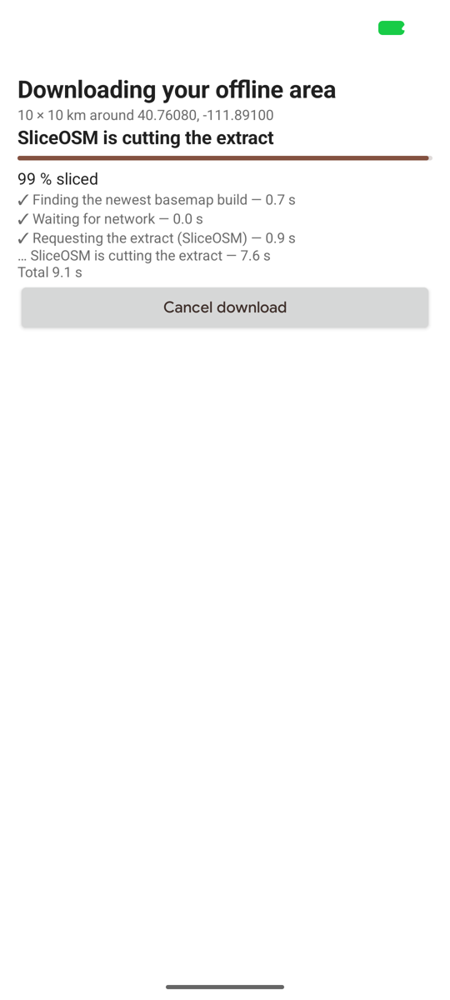
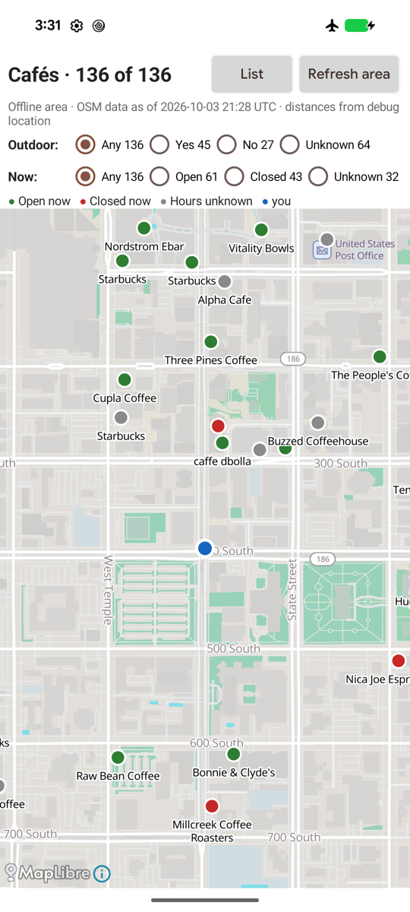
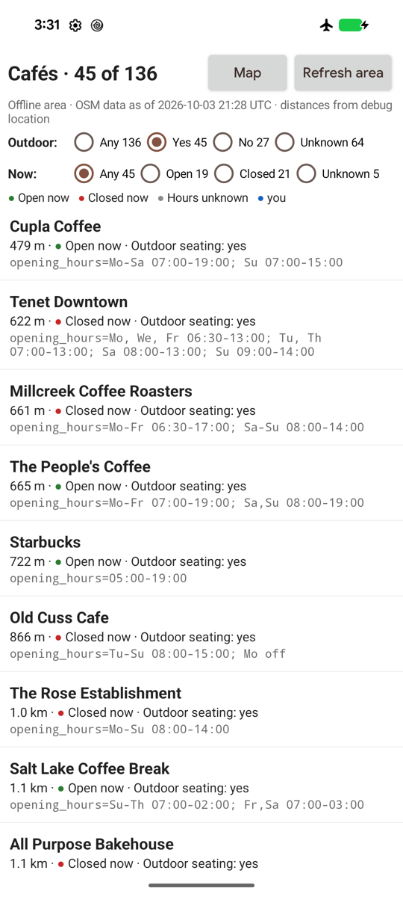
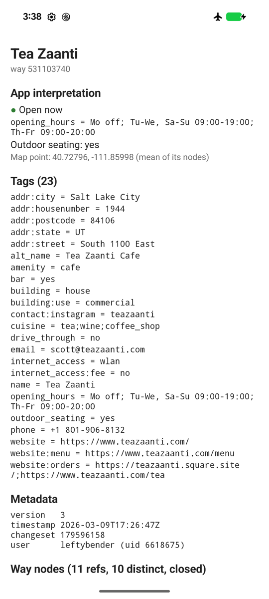
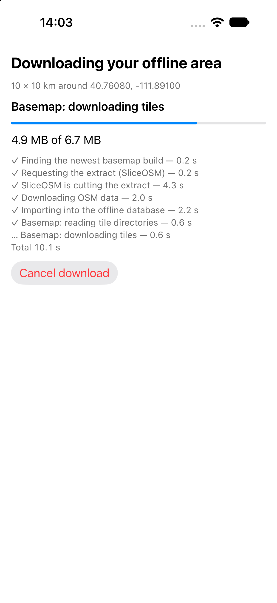
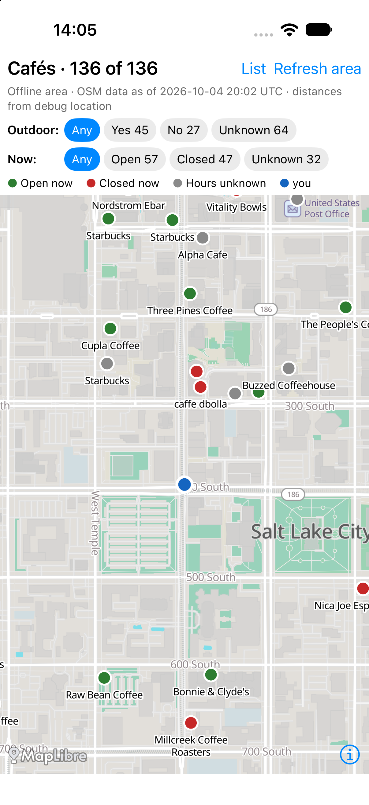
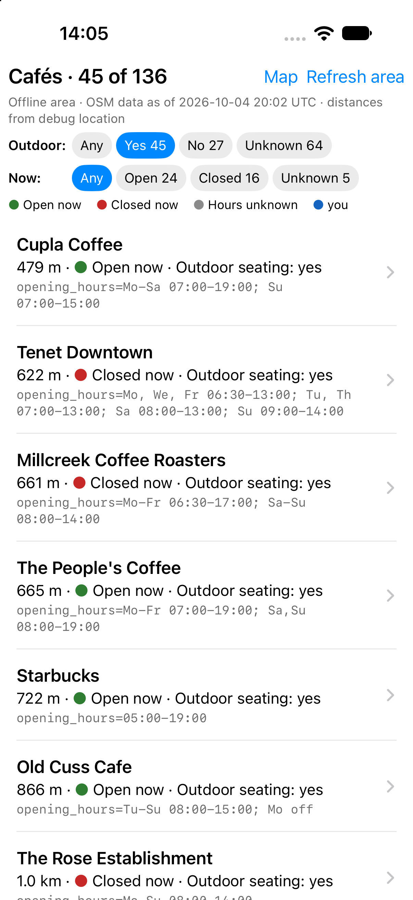
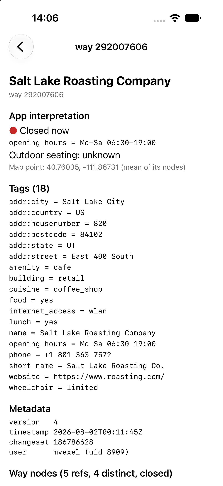

Café app walkthrough
android/cafe-app
is the reference app for Cantino: find cafés near you, with no network
after the first download. Plain Android views, MapLibre Native 13.6.1,
no Play Services. It passed this acceptance scenario on a Pixel 8
(2026-10-03, downtown Salt Lake City):
| Download | Map, airplane mode | Filters | Object detail |
|---|---|---|---|
 |
 |
 |
 |
Paths below are relative to
android/cafe-app/src/main/java/lol/osm/cantino/cafe/.
1. Download the area
| What | Code | Cantino API |
|---|---|---|
Location permission, one fix (LocationManager, 30 s
timeout); fallback: type "lat,lon" or pick a preset |
MainActivity.startFirstRun, Location.kt
(DeviceLocation.current) |
|
| 10×10 km box around the fix | Cafes.kt: Geo.squareAround,
Geo.AREA_SIZE_KM (a default, not a cap) |
Bbox |
| Offer dialog with the privacy line (the bbox goes to SliceOSM and the tile host) | MainActivity.offerDownload |
|
| Find a basemap build (demo) and start the download | MainActivity.startDownload |
Example-local ProtomapsBuilds.latestUrl(),
AreaManager.download(…, BasemapSource.Extract(planet, maxZoom = 15)) |
| Progress screen: phase, bytes (with total when known), per-phase durations | MainActivity.ProgressScreen.update |
AreaManager.state(areaId), every AreaState
subtype |
| Failure: Retry, or back to the map (the previous area is kept) | MainActivity.showFailure |
AreaState.Failed.retryable,
publishedArea |
| Refresh: same bbox, full replace | MainActivity.confirmRefresh |
AreaMetadata.bbox, download again |
The state is collected for the activity's whole life
(MainActivity.onCreate), so a relaunch during a download
shows its progress, and the first emitted state decides the screen:
running → progress, published → map, otherwise → first run.
Measured: Ready in 27.4 s, 75.6 MB database, 6.5 MB basemap (Performance).
2. Restart in airplane mode
Nothing to do in code: on launch, publishedArea(AREA_ID)
is not null, so MainActivity goes straight to
showMap(). Every byte the map and queries need is in
filesDir/cantino-areas/.
3. Show the basemap
| What | Code | Cantino API |
|---|---|---|
Offline Protomaps style (copied from the sample app's
build-assets by the copyBasemapStyleAssets
Gradle task) with the area's PMTiles URL substituted |
MapScreen.styleJson |
AreaInfo.pmtilesUrl |
| Keep the camera over the area | MapScreen.setupMap |
AreaMetadata.bbox |
4. Find nearby cafés
| What | Code | Cantino API |
|---|---|---|
| One store, one thread, reopened after a refresh | CafeStore.withStore |
AsyncOsmStore, AreaMetadata.workId |
All amenity=cafe in the area, paged by 500 |
CafeLoader.load |
Query(tags, bbox, after, limit),
TagFilter.Equals |
| A map point for ways and relations (an anchor, not exact geometry) | CafeLoader marker helper |
wayCoordinates, batch get |
| Dots on the map (GeoJSON source), nearby list sorted by distance | MapScreen.applyFilters,
MapScreen.geoJson |
Result on the Salt Lake City area: 136 cafés (120 nodes, 16 ways).
5. Filter by outdoor seating and opening hours
Interpretation lives in the app, never in Cantino:
| Filter | Code | Rule |
|---|---|---|
| Outdoor seating Yes / No / Unknown | Cafes.kt: OutdoorSeating.of |
yes, no, seating kinds
(sidewalk, garden, …) = yes; missing or
anything else = Unknown (raw value kept) |
| Open now / Closed / Unknown | OpeningHours.kt (14 JVM tests in
src/test) |
A strict subset of the opening_hours syntax; anything
else is Unknown with a reason. Missing tag = Unknown |
Each choice shows its count, and Unknown is never folded into Open or
Closed: on this area 104 of 106 present opening_hours
values evaluate; 30 cafés have none.
6. Inspect tags and underlying objects
| What | Code | Cantino API |
|---|---|---|
| Any object by kind and ID | DetailActivity |
store.get(OsmId) |
| All raw tags | DetailActivity.render |
OsmObject.tags |
| Metadata, or "not stored (location version N)" for untagged nodes | DetailActivity.describe |
ObjectMetadata, Node.locationVersion |
| Way node list in order, repeats included, tap → node | DetailActivity |
Way.nodeIds |
| Relation members (role, kind, id), "not in this area" when missing | DetailActivity |
Relation.members, get returning null |
Running it
scripts/basemap-assets.sh # style, glyphs, sprites
scripts/build-android.sh
cd android && mise exec -- ./gradlew :cafe-app:installDebug
# Automated runs: never send a real location; use the debug override (debuggable builds only)
adb shell am start -S -n lol.osm.cantino.cafe/.MainActivity --ef lat 40.7608 --ef lon -111.8910Known limit: opening hours are evaluated in the phone's time zone. This is correct for the default flow because the area is downloaded around the user, but wrong when an area is used in another time zone; the area zone is not yet stored.
iOS
ios/cafe-app
is the same app in SwiftUI with MapLibre Native 6.31.0 (iOS 17+),
feature for feature, on the Swift adapter. On the iPhone 18 Pro
simulator (iOS 27, 2026-10-04, downtown Salt Lake City) a live download
and a refresh each took about 11 s (61 MB database, 6.5 MB basemap); the
map showed 136 cafés (45 / 27 / 64 outdoor seating yes / no / unknown,
32 with unknown hours), as on Android.
| Download | Map, no network used | Filters | Object detail |
|---|---|---|---|
 |
 |
 |
 |
Paths are relative to ios/cafe-app/CafeApp/; each file
names its Android counterpart.
| Android | iOS | Notes |
|---|---|---|
MainActivity (flow, progress, failure, refresh) |
AppModel.swift, FirstRunViews.swift |
The offer is a screen, not a dialog. Refresh downloads the published
AreaMetadata.bbox itself |
Location.kt (LocationManager, debug
extras) |
Location.swift (CLLocationManager, one
fix, 30 s) |
Debug override: launch arguments, see below |
CafeStore.kt (Mutex) |
CafeStore.swift (actor + FIFO gate) |
Same reopen-by-workId rule; the gate holds
select–open–read, since actors are reentrant |
Cafes.kt, RelationDetail.kt,
OpeningHours.kt, ProtomapsBuilds.kt |
Cafes.swift, OpeningHours.swift,
ProtomapsBuilds.swift |
Straight ports; relation markers use one batch get |
MapScreen.kt (radio groups) |
MapScreen.swift (chips with counts) |
Style copied into the bundle by copy-basemap-assets.sh
(the copyBasemapStyleAssets counterpart);
asset:// resolves to the bundle |
DetailActivity |
DetailView.swift |
Way nodes resolved with one batch get |
| JVM + instrumented tests | CafeAppTests/ (24 Swift Testing tests, hosted on the
simulator) |
Opening hours (all Kotlin cases), Protomaps builds (URLProtocol stub), relation café, paging past 500, refresh race |
Airplane mode cannot be switched on for a simulator alone, so the
closest honest check was used: after the download, a cold launch with
the map, filters and inspector open had no internet sockets
(lsof -a -i -p <pid> empty), while the same check
during a refresh showed the SliceOSM and tile-host connections. The
style references only asset:// and the area's
pmtiles://file:// archive.
scripts/basemap-assets.sh && scripts/build-ios-cafe.sh install
# Debug builds only; never real GPS in automated runs. -lat/-lon is sticky (-clear_debug_location YES).
xcrun simctl launch booted lol.osm.cantino.cafe -lat 40.7608 -lon -111.8910 -auto_download YES
# simctl cannot tap: these stand in for taps (DebugLaunch.swift)
xcrun simctl launch booted lol.osm.cantino.cafe -list YES -outdoor yes -now open
xcrun simctl launch booted lol.osm.cantino.cafe -object way/292007606
xcrun simctl launch booted lol.osm.cantino.cafe -refresh YES [-cancel_after 4]